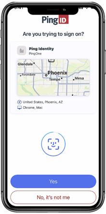
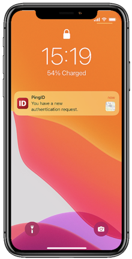

PingID 用起来不难，但这几个坑我踩了整整一下午
公司部署 PingID 之后，我从配对到日常认证踩了好几个看起来莫名其妙、查文档才恍然大悟的坑。这篇把症状、原因和解药一次性列清楚，遇到了直接对号入座。
公司去年上了 PingID，说是身份安全升级，所有人都得装——这个PingID官网上标注得明明白白，它就是企业级的多因素认证方案。我一开始没当回事——不就是个手机 App 收个推送吗？结果从第一次配对开始就一路翻车，光是"为什么电脑不跳下一步"这个问题就耗了快四十分钟。最后翻了 PingID 的文档，才发现很多坑其实不是我操作错了，是 App 的行为逻辑没说清楚。现在整理下来，你要是也遇到类似症状，直接对号入座就行。
坑一：扫码配对点了半天没反应，摄像头权限被静默拒绝
第一次配对时电脑屏幕上跳出了公司给的二维码提示页面，我掏出手机打开 PingID 点"扫描二维码"，结果画面死活不启动相机。App 界面还停在主界面，也没弹任何提示。我以为是 App 卡死了，强杀重开，还是一样。

最后在手机设置里翻了半天才发现，PingID 的相机权限被设成了"仅在使用时允许"，但 MIUI 的后台限制策略把它拦了——App 刚启动时申请权限的弹窗被系统吞了，PingID 拿不到相机权限就直接放弃，连个报错都不吐。解法很简单：手机设置里找到 PingID，把相机权限改成"始终允许"或者直接删掉 App，从官方下载重新装一遍，第一次启动时弹窗别手抖点"否"。如果是华为 EMUI 或者小米 MIUI，除了权限还要把 PingID 加入省电白名单，不然推送通知说不定也会被系统吃掉。
坑二：配对成功了，电脑那边还卡在"正在等待移动设备"
手机上明明显示配对成功的绿色勾，公司名字和个人信息也都对得上，但电脑屏幕上就那么杵着"正在等待移动设备配对..."，刷新也没用，等了五分钟还是那样。这个症状我反复出现了两次，第一次以为是网络问题重启了路由器，第二次才摸出门道。
原因是二维码有有效期。公司 IT 给的那个配对码从生成出来开始计时，有效期大概是几分钟，过了就自动作废。我那次是因为中途接了个电话，回来手机上还来得及扫，但电脑那边的二维码已经过期了，Ping 服务器把这个配对会话标记为无效，手机端虽然扫了新生成的内容，但电脑那边根本没在等——它还卡在旧会话里。解法就是让 IT 重新生成一个新的二维码，别浪费时间等。
坑三：推送通知偶尔收不到，VPN 登录卡在验证那一步
这个坑不是每次都发生，所以很难定位。表现是：连上 VPN 之后系统说"已向你的设备发送验证请求"，但手机锁屏界面啥也没有，点开 PingID App 手动刷新也看不到待处理请求。我一开始以为是公司服务器挂了，跑去问 IT，结果同事们都没事，就我一个人卡住。

排查下来原因有两个。第一个是国产 ROM 的杀后台机制。我的小米手机把 PingID 后台进程杀了，推送通道断了。把 PingID 加入"允许后台活动"和"无限制"电量消耗白名单之后就稳了。第二个是系统推送服务本身的问题——有时候 Google FCM 或者苹果 APNs 网络抖动，推送延迟个几分钟也是常事。这种时候别死等，打开 PingID App 主动拉一下就能看到请求，手动点个确认就过了。实在不行就用 OTP 验证码，手动填进去也能过，就是麻烦点。
坑四：身份核验自拍不过，脸都贴到框里了还是失败
入职的时候 HR 让我做身份核验，就是拍个自拍再拍个证件照，系统做人脸比对。我拍了三次，每次都提示"核验失败"。光线没问题啊，脸也在框里，还把眼镜摘了口罩摘了，怎么就过不了？
最后找 IT 走了人工审核才过，人工看了一眼照片和对比结果，说我证件照是五年前拍的，胖了一圈，算法比对相似度没达标。原来是这个坑——PingID 的人脸比对算法严格度是公司 IT 配的，如果阈值设得太严，几年前拍的证件照和现在本人确实可能对不上。还有一种情况是用照片翻拍照片，算法有活体检测会拒绝。解法就是多试几次不同光线角度，实在不行找 IT 走人工，别死磕自动重试浪费时间。
坑五：桌面端装完了但开机登录界面没出 PingID 验证
我是运维岗，SSH 连服务器需要 PingID 二次验证，所以也装了桌面端 App。装完之后发现开机 Windows 登录界面没有出现 PingID 的验证步骤，直接进系统了。以为是没装好，卸载重装三次还是一样。
后来去PingID文档翻了一下才知道，PingID 的桌面端分新旧两版——新的统一归到 PingOne 产品线下，旧版叫 legacy desktop app，安装逻辑和配置方式不一样。我装的是新版，但公司 IT 配的还是旧版的身份源，两边对不上所以没生效。这个不是我能解决的，得找 IT 确认公司用的是 PingOne 还是老的 PingFederate，然后装对应的客户端版本。
防坑清单
- 权限类：装完 PingID 第一时间检查通知、相机、生物识别、网络四个权限，国产 ROM 额外加省电白名单
- 配对类：二维码过期就重新生成，别死等电脑那边自动刷新
- 推送类：收不到推送先手动打开 App 刷新，再检查后台白名单
- 核验类：人脸比对不过别死磕自动重试，直接找 IT 人工审核更快
- 版本类：装桌面端前先问清楚公司 IT 用的是新版 PingOne 还是旧版 legacy，版本对不上白折腾
最后说一句
PingID 本质上是个帮企业做身份安全的工具，设计逻辑都是围绕"安全优先"来的，所以它的行为有时候显得有点僵硬。但知道上面这些坑之后，日常用起来其实相当省心——大部分时候就是掏手机按一下指纹，两秒钟搞定。真正浪费时间的从来不是操作本身，是不知道为什么它不工作时那种无头苍蝇的焦虑。这篇里提到的排查思路和注意事项，对应的软件分发资源也都在GitHub、Gitee、GitCode三个仓库同步了一份，国内访问走 Gitee 或 GitCode 更快。